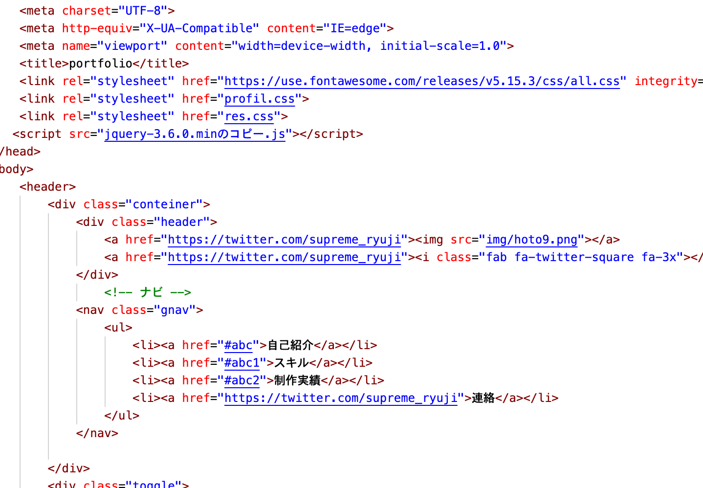
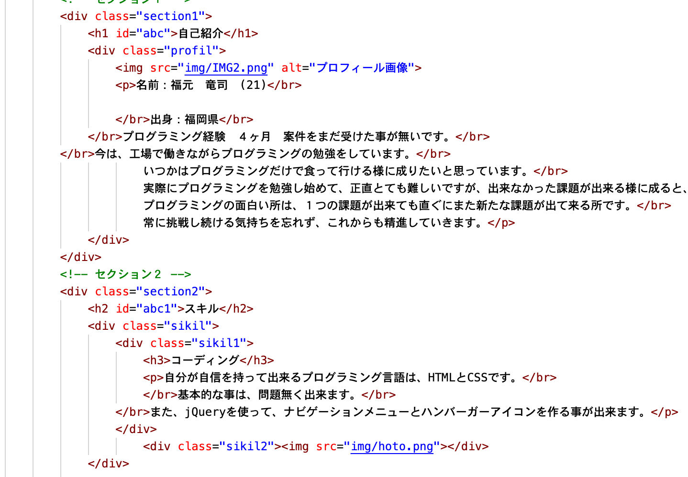
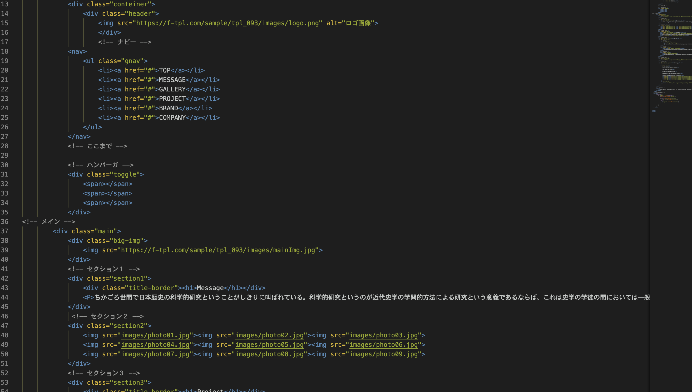
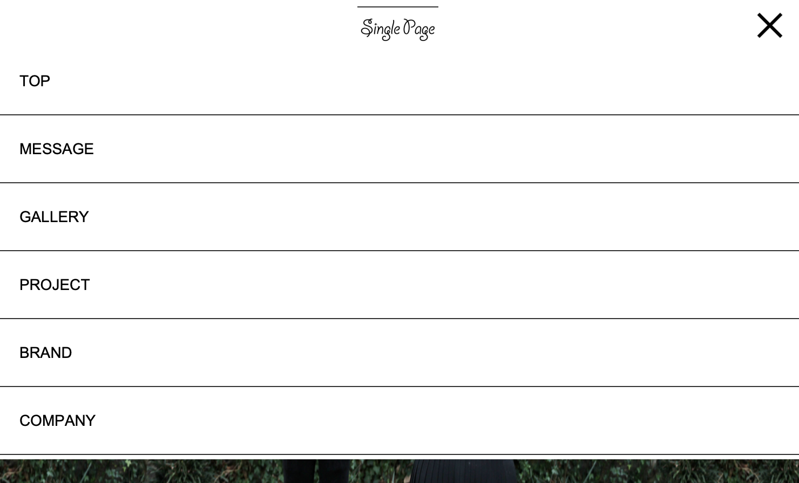

自己紹介

名前：福元 竜司 (21) 出身：福岡県 プログラミング経験 ４ヶ月 案件をまだ受けた事が無いです。 今は、工場で働きながらプログラミングの勉強をしています。 いつかはプログラミングだけで食って行ける様に成りたいと思っています。 実際にプログラミングを勉強し始めて、正直とても難しいですが、出来なかった課題が出来る様に成ると、それまでの苦労が全て吹き飛びます。 プログラミングの面白い所は、１つの課題が出来ても直ぐにまた新たな課題が出て来る所です。 常に挑戦し続ける気持ちを忘れず、これからも精進していきます。
スキル
コーディング
自分が自信を持って出来るプログラミング言語は、HTMLとCSSです。 基本的な事は、問題無く出来ます。 また、jQueryを使って、ナビゲーションメニューとハンバーガーアイコンを作る事が出来ます。

レスポンシブデザイン
PC用のWebサイトをスマホ表示、タブレット表示にする事が出来ます。 自分の中でレスポンシブデザインは、得意分野なので自信を持っています。
